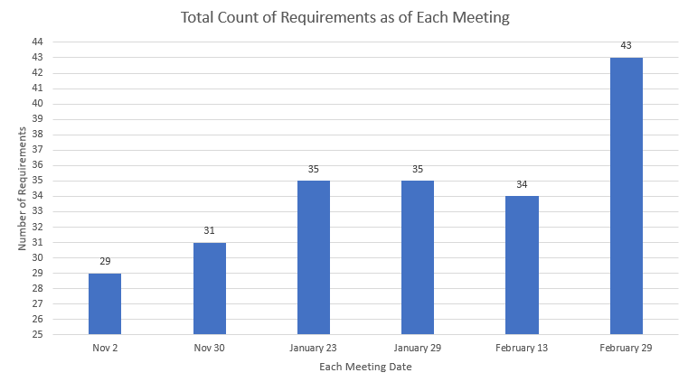
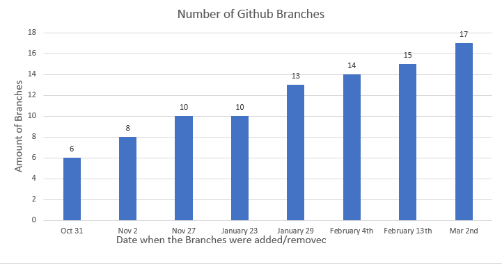

Requirements:
The requirements for this application that has to be done.
We will track the total count of the requirements for the project and display them in the chart here.
Current requirements count for Log in: 2
Current requirements count for Home Page: 2
Current requirements count for Measurement Pages: 21
Current requirements count for Side Bar: 4
Total Amount of Requirements: 29

Active Code Branche:
The number of active branches in source control. It can give insights into the parallel development efforts.
There are currently 8 active branches right now in our wexenergy_app github repo.
